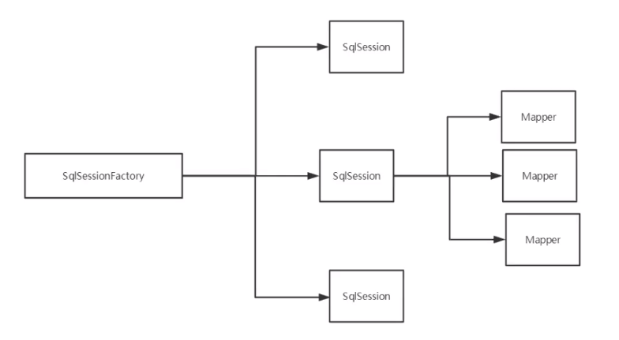

搭建环境 1 2 3 4 5 6 7 8 9 10 CREATE TABLE user (id INT (20 ) NOT NULL PRIMARY KEY ,name VARCHAR (30 ) DEFAULT NULL ,pwd VARCHAR (30 ) DEFAULT NULL )ENGINE =INNODB DEFAULT CHARSET =utf8; INSERT INTO user (id , name , pwd) VALUES (1 , 'jack' , '123' ), (2 , 'jack02' , '123' );
新建项目
新建 maven 项目
删除 src 目录
配置依赖
1 2 3 4 5 6 7 8 9 10 11 12 13 14 15 16 17 18 19 20 21 22 23 24 25 26 27 28 29 30 31 32 33 34 35 36 37 38 39 40 <?xml version="1.0" encoding="UTF-8"?> <project xmlns ="http://maven.apache.org/POM/4.0.0" xmlns:xsi ="http://www.w3.org/2001/XMLSchema-instance" xsi:schemaLocation ="http://maven.apache.org/POM/4.0.0 http://maven.apache.org/xsd/maven-4.0.0.xsd" > <modelVersion > 4.0.0</modelVersion > <groupId > com.jzheng</groupId > <artifactId > mybatis-study</artifactId > <packaging > pom</packaging > <version > 1.0-SNAPSHOT</version > <modules > <module > mybatis-01</module > </modules > <dependencies > <dependency > <groupId > mysql</groupId > <artifactId > mysql-connector-java</artifactId > <version > 5.1.46</version > </dependency > <dependency > <groupId > org.mybatis</groupId > <artifactId > mybatis</artifactId > <version > 3.5.2</version > </dependency > <dependency > <groupId > junit</groupId > <artifactId > junit</artifactId > <version > 4.12</version > <scope > test</scope > </dependency > </dependencies > </project >
配置 idea 链接本地 mysql 报错 Server returns invalid timezone. Go to 'Advanced' tab and set 'serverTimezone' property manually.
时区错误，MySQL默认的时区是UTC时区，比北京时间晚8个小时。在mysql的命令模式下，输入 set global time_zone='+8:00'; 即可
连接后点击扳手图标可以拿到 url 信息
mybatis 配置文件
1 2 3 4 5 6 7 8 9 10 11 12 13 14 15 16 17 18 <?xml version="1.0" encoding="UTF-8" ?> <!DOCTYPE configuration PUBLIC "-//mybatis.org//DTD Config 3.0//EN" "http://mybatis.org/dtd/mybatis-3-config.dtd" > <configuration > <environments default ="development" > <environment id ="development" > <transactionManager type ="JDBC" /> <dataSource type ="POOLED" > <property name ="driver" value ="com.mysql.jdbc.Driver" /> <property name ="url" value ="jdbc:mysql://localhost:3306/mybatis?useSSL=true& useUnicode=true& characterEncoding=UTF-8& serverTime=UTC" /> <property name ="username" value ="root" /> <property name ="password" value ="root" /> </dataSource > </environment > </environments > </configuration >
编写工具类
1 2 3 4 5 6 7 8 9 10 11 12 13 14 15 16 17 18 public class MybatisUtils private static SqlSessionFactory sqlSessionFactory; static { String resource = "mybatis-config.xml" ; InputStream inputStream = null ; try { inputStream = Resources.getResourceAsStream(resource); } catch (IOException e) { e.printStackTrace(); } sqlSessionFactory = new SqlSessionFactoryBuilder().build(inputStream); } public static SqlSession getSqlSession () return sqlSessionFactory.openSession(); } }
生成实体类 Pojo
定义 Dao 接口
配置 Mapper xml
1 2 3 4 5 6 7 8 9 10 <?xml version="1.0" encoding="UTF-8" ?> <!DOCTYPE mapper PUBLIC "-//mybatis.org//DTD Mapper 3.0//EN" "http://mybatis.org/dtd/mybatis-3-mapper.dtd" > <mapper namespace ="com.jzheng.dao.UserDao" > <select id ="getUserList" resultType ="com.jzheng.pojo.User" > select * from mybaties.user; </select > </mapper >
编写测试类
常见错误
1 2 3 4 5 6 7 8 9 10 11 12 13 14 15 16 17 18 19 20 21 22 23 24 25 26 27 28 29 30 31 32 33 34 35 36 37 org.apache.ibatis.binding.BindingException: Type interface com.jzheng.dao.UserDao is not known to the MapperRegistry. -- 核心配置文件没有配置 mapper 路径 Caused by: java.io.IOException: Could not find resource com/jzheng/dao/UserMapper.xml at org.apache.ibatis.io.Resources.getResourceAsStream(Resources.java:114) at org.apache.ibatis.io.Resources.getResourceAsStream(Resources.java:100) at org.apache.ibatis.builder.xml.XMLConfigBuilder.mapperElement(XMLConfigBuilder.java:372) at org.apache.ibatis.builder.xml.XMLConfigBuilder.parseConfiguration(XMLConfigBuilder.java:119) ... 27 more -- maven 约定大于配置，默认指挥将 resources 下面的 xml 导出到 target, 如果需要将 java 下的配置文件到处需要再 pom.xml 下的 build tag 里加点配置 <build> <resources> <resource> <directory>src/main/resources</directory> <includes> <include>**/*.properties</include> <include>**/*.xml</include> </includes> </resource> <resource> <directory>src/main/java</directory> <includes> <include>**/*.properties</include> <include>**/*.xml</include> </includes> <filtering>true </filtering> </resource> </resources> </build> java.security.cert.CertPathValidatorException: Path does not chain with any of the trust anchors -- 链接配置问题，可以把 useSSL 改为 false
CRUD mapper namespace 中的包名要和 Dao/mapper 保持一致
select/insert/update/delete 选择，查询语句
id: 对应 namespace 中的方法名
resultType: sql 执行的返回值
parameterType: 参数类型
编写接口
配置 mapper
测试
怎删改需要提交事务
1 2 3 4 5 6 7 8 9 10 11 12 13 14 15 16 17 int addUser(User user); <insert id="addUser" parameterType="com.jzheng.pojo.User"> insert into mybatis.user (id, name , pwd) values (#{id}, #{name}, #{pwd}); </insert> @Test public void addUser() { SqlSession sqlSession = MybatisUtils.getSqlSession(); // 方式一：getMapper UserMapper userDao = sqlSession.getMapper(UserMapper.class); System.out.println(userDao.addUser(new User(4, "haha", "123123"))); sqlSession.commit(); sqlSession.close(); }
万能 map 如果实体类的属性过多，可以考虑使用 map 传递参数
模糊查询 配置解析 核心配置文件：mybatis-config.xml
1 2 3 4 5 6 7 8 9 10 11 12 properties（属性） settings（设置） typeAliases（类型别名） typeHandlers（类型处理器） objectFactory（对象工厂） plugins（插件） environments（环境配置） environment（环境变量） transactionManager（事务管理器） dataSource（数据源） databaseIdProvider（数据库厂商标识） mappers（映射器）
environments 环境变量 可以配置多套环境，但使用时只能选择一种
默认事务管理器 JDBC，默认 dataSource - Pooled
properties 属性 引用配置文件，可以和 .properties 文件交互
db.properties
1 2 3 4 driver =com.mysql.jdbc.Driver url =jdbc:mysql://localhost:3306/mybatis?useSSL=false&useUnicode=true&characterEncoding=UTF-8&serverTime=UTC username =root password =root
也可以和 xml 混合使用，如果属性有重名，优先使用外部 properties 中的属性
Alias 别名 设置短的名字，减少类完全限定名的冗余
1 2 3 4 5 6 7 8 9 <typeAliases > <typeAlias type ="com.jzheng.pojo.User" alias ="User" /> </typeAliases > <typeAliases > <package name ="com.jzheng.pojo" /> </typeAliases >
也可以在实体类上添加 Alias 注解
setting 设置 cacheEnabled, lazyLoadingEnabled, logImpl
mapper 映射器 方式一：资源文件
1 2 3 <mappers > <mapper resource ="com/jzheng/dao/UserMapper.xml" /> </mappers >
方式二：使用 class 绑定
1 2 3 <mappers > <mapper class ="com.jzheng.dao.UserMapper" /> </mappers >
限制：
接口和 mapper 必须重名
接口和 mapper 必须要同意路径下
方式三：包扫描
1 2 3 <mappers > <package name ="com.jzheng.dao" /> </mappers >
缺陷也是要在同一路径下
生命周期 生命周期和作用域是至关重要的，因为错误的使用会导致非常严重的并发问题
SqlSessionFactoryBuilder
一旦创建了 SqlSessionFactory 就不在需要他了
局部变量
SqlSessionFactory
说白了就是可以看作数据库连接池
一旦创建就一直存在，没有理由丢弃它或者重新创建一个新的
因此 SqlSessionFactory 最佳作用域应为 应用作用域
最简单的是使用单例模式或静态单例模式
SqlSession
链接到连接池的一个请求
不能被共享
最佳作用域是请求或方法作用域
用完之后需要赶紧关闭，否则资源被占用

每个 Mapper 代表一个具体的业务
解决属性名和字段名字不一样的问题 将 User 的 pwd 改为 password, 和 DB 产生歧义
解决方案
起别名
1 2 3 <select id ="getUserById" parameterType ="int" resultType ="user" > select id,name,pwd from mybatis.user where id = #{id}; </select >
resultMap, 结果集映射
1 2 3 4 5 6 7 8 9 <resultMap id ="UserMap" type ="User" > <result column ="id" property ="id" /> <result column ="name" property ="name" /> <result column ="pwd" property ="password" /> </resultMap > <select id ="getUserById" parameterType ="int" resultMap ="UserMap" > select * from mybatis.user where id = #{id}; </select >
ResultMap 的设计思想是，对于简单的语句根本不需要配置显示的结果集映射，对于复杂的语句只需要描述他们的关系就行了。
上面的方案还可以将 id, name 的描述简化掉，框架会帮你处理，只保留不一致的即可
日志 日志工厂 logImpl 数据库操作异常排错
SLF4J [Y]
LOG4J
LOG4J2 [Y]
JDK_LOGGING
COMMONS_LOGGING
STDOUT_LOGGING [Y]
NO_LOGGING
STDOUT_LOGGING sample:
1 2 3 <settings > <setting name ="logImpl" value ="STDOUT_LOGGING" /> </settings >
1 2 3 4 5 6 7 8 9 10 11 12 Opening JDBC Connection Created connection 477376212. Setting autocommit to false on JDBC Connection [com.mysql.jdbc.JDBC4Connection@1c742ed4] ==> Preparing: select * from mybatis.user where id = ?; ==> Parameters: 1(Integer) <== Columns: id, name, pwd <== Row: 1, jack, 123 <== Total: 1 User{id=1, name='jack', password='123'} Resetting autocommit to true on JDBC Connection [com.mysql.jdbc.JDBC4Connection@1c742ed4] Closing JDBC Connection [com.mysql.jdbc.JDBC4Connection@1c742ed4] Returned connection 477376212 to pool.
Log4j
导包
添加 log4j.properties
添加配置到核心配置文件
分页 减少数据的处理量
使用 limit 分页 1 select * from table limit startIndex, size ;
RowBounds 稍作了解
注解开发 面向接口编程：
接口有两类：一类是对一个个体的抽象，可以对应为一个抽象个体，另一类是对一个个体的某一方面抽象，即形成一个抽象面
个体可能有多个抽象面，抽象提与抽象面是有区别的
在接口方法上添加注解
在核心配置文件中添加配置
1 2 3 4 public interface UserMapper @Select("select * from user") List<User> getUsers () ; }
1 2 3 <mappers > <mapper class ="com.jzheng.dao.UserMapper" /> </mappers >
反射 + 动态代理
Mybatis 执行流程解析
Resources 获取加载全局配置文件
实例化 SqlSessionFactoryBuilder 构造器
解析配置文件流 XMLConfigBulder
Configuration 所有的配置信息
SqlSessionFactory 实例化
Transaction 事务管理器
创建 executor 执行器
创建 SQLSession
实现 CRUD
查看是否成功
注解 CRUD 工具类自动提交事务可以通过 Utils 类中，指定参数实现
1 2 3 public static SqlSession getSqlSession () return sqlSessionFactory.openSession(true ); }
实现
1 2 3 4 5 6 7 8 9 10 11 12 13 14 15 16 17 18 public interface UserMapper @Select("select * from user") List<User> getUsers () ; @Select("select * from user where id=#{id}") User getUserById (@Param("id") int id) ; @Insert("insert into user (id, name, pwd) values (#{id}, #{name}, #{password})") int addUser (User user) @Update("update user set name=#{name}, pwd=#{password} where id=#{id}") int updateUser (User user) @Delete("delete from user where id=#{id}") int deleteUser (@Param("id") int id) }
关于 @Param 注解
基本类型 + String 类型需要加
引用类型不需要
如果只有一个基本类型，可以不加，但还是建议加上
Sql 中引用的属性名和 Param 中的名字保持一致
‘#’ 前缀可以防注入，’$’ 不行
Lombok 感觉可以起飞，稍微有点缺点，自行斟酌
安装 Idea 插件
导入 jar 包
实体类加注解
支持的方法
@Getter and @Setter
@FieldNameConstants
@ToString
@EqualsAndHashCode
@AllArgsConstructor, @RequiredArgsConstructor and @NoArgsConstructor
@Log, @Log4j, @Log4j2, @Slf4j, @XSlf4j, @CommonsLog, @JBossLog, @Flogger, @CustomLog
@Data - 无参构造，getter/settter, toString, equals
@Builder
@SuperBuilder
@Singular
@Delegate
@Value
@Accessors
@Wither
@With
@SneakyThrows
@val
@var
experimental @var
@UtilityClass
Lombok config system
Code inspections
Refactoring actions (lombok and delombok)
多对一 多对一 - 关联 - association
一对多 - 集合 - collection
创建测试表
1 2 3 4 5 6 7 8 9 10 11 12 13 14 15 16 17 18 19 20 21 22 CREATE TABLE `teacher` ( `id` INT (10 ) NOT NULL , `name` VARCHAR (30 ) DEFAULT NULL , PRIMARY KEY (`id` ) ) ENGINE =INNODB DEFAULT CHARSET =utf8; INSERT INTO teacher(`id` , `name` ) VALUES (1 , '秦老师' );CREATE TABLE `student` ( `id` INT (10 ) NOT NULL , `name` VARCHAR (30 ) DEFAULT NULL , `tid` INT (10 ) DEFAULT NULL , PRIMARY KEY (`id` ), KEY `fktid` (`tid` ), CONSTRAINT `fktid` FOREIGN KEY (`tid` ) REFERENCES `teacher` (`id` ) ) ENGINE =INNODB DEFAULT CHARSET =utf8; INSERT INTO `student` (`id` , `name` , `tid` ) VALUES ('1' , '小明' , '1' );INSERT INTO `student` (`id` , `name` , `tid` ) VALUES ('2' , '小红' , '1' );INSERT INTO `student` (`id` , `name` , `tid` ) VALUES ('3' , '小张' , '1' );INSERT INTO `student` (`id` , `name` , `tid` ) VALUES ('4' , '小李' , '1' );INSERT INTO `student` (`id` , `name` , `tid` ) VALUES ('5' , '小王' , '1' );
测试环境搭建
导入 lombok
新建 teacher/student 实体类
创建 mapper 接口
创建 mapper xml 文件
核心配置类注册接口或 xml
测试查询
按照查询嵌套处理
1 2 3 4 5 6 7 8 9 10 11 12 13 14 15 16 <select id ="getStudent" resultMap ="StudentTeacher" > select * from student; </select > <resultMap id ="StudentTeacher" type ="Student" > <association property ="teacher" column ="tid" javaType ="Teacher" select ="getTeacher" /> </resultMap > <select id ="getTeacher" resultType ="Teacher" > select * from teacher where id=#{id} </select >
按照结果嵌套处理
1 2 3 4 5 6 7 8 9 10 11 12 <select id ="getStudent2" resultMap ="StudentTeacher2" > select s.id sid, s.name sname, t.name tname from student s, teacher t where s.tid = tid; </select > <resultMap id ="StudentTeacher2" type ="Student" > <result property ="id" column ="sid" /> <result property ="name" column ="sname" /> <association property ="teacher" javaType ="Teacher" > <result property ="name" column ="tname" /> </association > </resultMap >
对应 SQL 的子查询和联表查询
一对多 一个老师对应多个学生
实体类
1 2 3 4 5 6 7 8 9 10 11 12 13 14 @Data public class Teacher private int id; private String name; private List<Student> students; } @Data public class Student private int id; private String name; private int tid; }
按照结果嵌套处理
1 2 3 4 5 6 7 8 9 10 11 12 13 14 15 16 17 18 <select id ="getTeachers" resultType ="Teacher" > select * from teacher; </select > <select id ="getTeacher" resultMap ="TeacherStudent" > select s.id sid, s.name sname, t.name tname, t.id tid from student s, teacher t where s.tid = t.id and t.id=#{tid}; </select > <resultMap id ="TeacherStudent" type ="Teacher" > <result property ="id" column ="tid" /> <result property ="name" column ="tname" /> <collection property ="students" ofType ="Student" > <result property ="id" column ="sid" /> <result property ="name" column ="sname" /> <result property ="tid" column ="tid" /> </collection > </resultMap >
按照查询嵌套处理
1 2 3 4 5 6 7 8 9 10 <select id ="getTeacher2" resultMap ="TeacherStudent2" > select * from mybatis.teacher where id=#{tid}; </select > <resultMap id ="TeacherStudent2" type ="Teacher" > <collection property ="students" javaType ="ArrayList" ofType ="Student" select ="getStudentByTeacherId" column ="id" /> </resultMap > <select id ="getStudentByTeacherId" resultType ="Student" > select * from mybatis.student where tid = #{tid}; </select >
小结：
关联 - 一对多 - associate
集合 - 多对一 - collection
javaType & ofType
javaType 指定实体类中的属性
ofType 指定映射到集合中的 pojo 类型，泛型中的约束类型
注意点：
保证SQL可读性，尽量通俗易懂
注意一对多和多对一属性名和字段的问题
排错时善用 log
面试高频
Mysql 引擎
InnoDB 底层原理
索引
索引优化
动态 SQL 根据不同的条件生成不同的 SQL 语句
if
choose (when, otherwise)
trim (where, set)
foreach
搭建环境 1 2 3 4 5 6 7 CREATE TABLE `blog` (`id` VARCHAR (50 ) NOT NULL COMMENT '博客id' ,`title` VARCHAR (100 ) NOT NULL COMMENT '博客标题' ,`author` VARCHAR (30 ) NOT NULL COMMENT '博客作者' ,`create_time` DATETIME NOT NULL COMMENT '创建时间' ,`views` INT (30 ) NOT NULL COMMENT '浏览量' )ENGINE =INNODB DEFAULT CHARSET =utf8
创建工程
导包
编写配置
编写实体类
编写 mapper + 测试
1 2 3 4 5 6 7 8 @Data public class Blog private String id; private String title; private String author; private Date createTime; private int views; }
if
1 2 3 4 5 6 7 8 9 <select id ="queryBlogIf" parameterType ="map" resultType ="blog" > select * from mybatis.blog where 1=1 <if test ="title != null" > and title=#{title} </if > <if test ="author != null" > and author=#{author} </if > </select >
choose (when, otherwise)
1 2 3 4 5 6 7 8 9 10 11 12 13 14 15 16 <select id ="queryBlogChoose" parameterType ="map" resultType ="blog" > select * from mybatis.blog <where > <choose > <when test ="title != null" > title = #{title} </when > <when test ="author != null" > and author = #{author} </when > <otherwise > and views = #{views} </otherwise > </choose > </where > </select >
trim (where, set)
1 2 3 4 5 6 7 8 9 10 11 12 13 14 15 16 17 18 19 20 21 22 23 24 <select id ="queryBlogIf" parameterType ="map" resultType ="blog" > select * from mybatis.blog <where > <if test ="title != null" > and title=#{title} </if > <if test ="author != null" > and author=#{author} </if > </where > </select > <update id ="updateBlog" parameterType ="map" > update mybatis.blog <set > <if test ="title != null" > title=#{title}, </if > <if test ="author!=null" > author = #{author} </if > </set > where id=#{id} </update >
foreach
1 2 3 4 5 6 7 8 <select id ="queryBlogs" parameterType ="map" resultType ="blog" > select * from mybatis.blog <where > <foreach collection ="ids" item ="id" open ="and (" close =")" separator ="or" > id=#{id} </foreach > </where > </select >
所谓的动态 SQL，本质还是 SQL 语句，只是我们可以在 SQL 层面去执行一个逻辑代码
SQL片段
将公共部分抽取出来
通过 include 标签引用
1 2 3 4 5 6 7 8 9 10 11 12 13 14 15 <sql id ="if-title-author" > <if test ="title != null" > and title=#{title} </if > <if test ="author != null" > and author=#{author} </if > </sql > <select id ="queryBlogIf" parameterType ="map" resultType ="blog" > select * from mybatis.blog <where > <include refid ="if-title-author" > </include > </where > </select >
最好基于单表来定义 SQL 片段
不要存在 where 标签
Cache 缓存 - project 09 查询 -> 连接数据库，耗资源
缓存：一次查询的结果，给他暂存在一个可以直接去到的地方(内存)，再次查询的时候直接走内存
一级缓存 一级缓存默认开启，且不能关闭，只在一次 SqlSession 中有用
开启日志
测试一次 session 中查询两次相同结果
查看日志输出
缓存失效的几种情况：
查询不同的东西
增删改可能会改变原来的数据，所以必定要刷新缓存
查询不同的 mapper.xml
手动清理缓存
二级缓存
开启全局缓存 cacheEnabled -> true
在 mapper.xml 中加入
一级缓存作用域太低了，所以诞生了二级缓存
基于 namespace 级别的缓存，一个命名空间对应一个二级缓存
工作机制
一个会话查询一条数据，数据被存放在一级缓存中
当前会话关闭，对应的一级缓存就没了，一级缓存中的数据会被保存到二级缓存中
新会话查询信息，会从二级缓存中获取内容
不同 mapper 查出的数据会放在自己对应的缓存中
默认的 Cause: java.io.NotSerializableException: com.jzheng.pojo.User
小结：
只要开启二级缓存，在同一个 Mapper 下就有效
素有的数据都会先放在一级缓存中
只有当会话提交或者关闭，才会提交到二级缓存中
缓存原理
先看二级缓存中有没有
再看一级缓存中有没有
最后才查DB
自定义缓存 ehcache 一种广泛使用的开源 Java 分布式缓存，主要面向通用缓存
使用：
导包
config 中配置 type
不过这中功能现在都用 redis 代替了